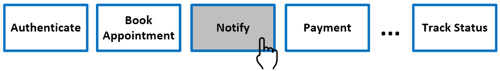

The notion of “government-as-a-platform” is based on the principle of “build-once, use many times”. It’s about breaking things down into smaller parts like building blocks. Each block does one job and it’s easy to connect the blocks together when building a service. In an inefficient organization, siloed groups build their own customized services from the ground up to suit their particular needs, and this would happen over and over. A better approach is to build common service building blocks only once, in a re-usable format, and then share these with one another. This accelerates service delivery, reduces costs and offers consistency.
The BC Government has identified twenty common building blocks, or service design patterns, including the following:
What is Notify?
The Notify design pattern will make it easier to keep citizens updated, by enabling services to send automated text messages or emails to their users.
How do I use it?
There are two ways government services can send notifications to users. You can do a simple integration with your web application or upload batches of messages. Here is the API usage for sending text or email message(s):
Sending a Message
To send an outgoing message, make an HTTP POST to this URI: /bcgov/Accounts/{AccountSid}/Messages
| Parameter | Description |
|---|---|
| To: | The destination SMS number or batch file upload |
How do I customize?
Just get the source code from our github repo. It's been made available in multiple programming languages. Make a clone and tag it with your changes and identifier.
Can I just plug and play?
We are currently working on developing a docker container.